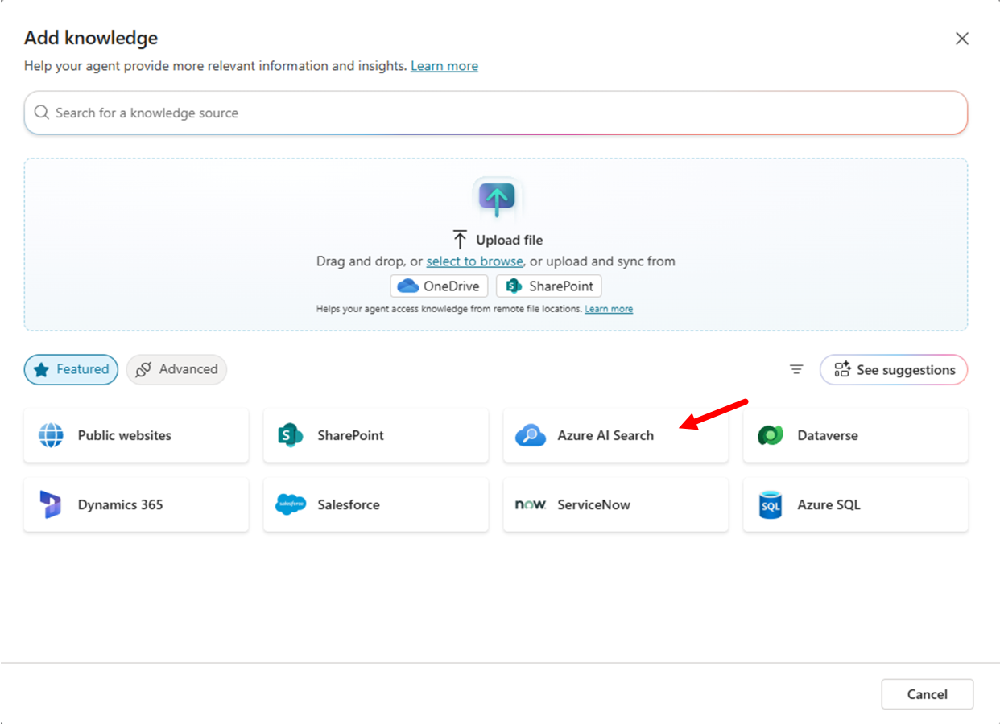

ラボ MCS8 - RAG のための Azure AI Search 統合
このラボでは、Microsoft Copilot Studio のエージェントに Azure AI Search を活用した RAG (Retrieval-Augmented Generation) 機能を追加する方法を学習します。ベクトル検索によって候補者のドキュメントを検索し、組織のデータに裏付けられたインテリジェントかつコンテキストに応じた回答を提供する、人事向けの特化型 HR Knowledge エージェントを作成します。本ラボでは、Copilot Studio の会話能力と Azure AI Search の高度な検索機能を組み合わせた強力な AI エージェントの作成方法を紹介します。
Microsoft Copilot Studio で エージェント を構築したい場合は、次の ラボ を実施してください
Important
Microsoft Copilot Studio でのエージェント作成と、基本的な Azure リソース管理の経験が必要です。
このラボで学ぶこと:
- 知識インデックス用に Azure AI Search サービスを作成・構成する方法
- Azure AI Search を使用して PDF ドキュメントをインポートし、ベクトル化する方法
- Azure AI Search を Microsoft Copilot Studio の知識ソースとして統合する方法
- RAG を活用したインテリジェントなドキュメント検索エージェントを作成する方法
Retrieval-Augmented Generation (RAG) とは?
Retrieval-Augmented Generation (RAG) は、言語モデルが生成する回答の品質を向上させるための AI 技術です。簡単な例で説明します。
スマートアシスタントが質問に答えるとき、必要な情報がすべて揃っていない場合があります。RAG は、アシスタントが大量のドキュメントを検索して関連情報を取得し、その情報を使ってより正確な回答を作成できるようにします。
RAG は次の 2 つのステップを組み合わせます:
- Retrieval: 大量のデータから関連情報を検索する
- Generation: 検索結果を基に詳細で正確な回答を生成する
これにより、質問応答、記事作成、調査支援などで、より有益で信頼性の高い回答が得られます。
RAG について詳しくは、こちらの Doodle to Code ビデオをご覧ください。
Vector Search を使用する利点
ベクトル検索は、単なるキーワード一致ではなく “意味” に基づいて情報を高速かつ正確に見つける高度な技術です。従来のテキスト検索がキーワードの完全一致に依存するのに対し、ベクトル検索は数値ベクトルを用いてクエリと類似した内容を探します。これにより、以下が可能になります。
- 意味・概念の類似性: 異なる単語でも意味が近いコンセプトをマッチング (例: 「recruitment」と「hiring」)
- 多言語コンテンツ: 異なる言語間の同義内容を検索 (例: 「resume」と「curriculum vitae」)
- 複数コンテンツ形式: テキストドキュメントや PDF など、形式をまたいだ検索
ベクトル検索の仕組み:
- テキストをベクトルへ変換: テキストやドキュメントを、その意味を表す数値 (ベクトル) に変換 (Embedding モデルを使用)
- ベクトルを保存: これらのベクトルを効率的に扱う専用データベース (例: Azure AI Search インデックス) に保存
- ベクトルで検索: クエリもベクトルに変換し、インデックス内で意味的に近いベクトルを検索
例えば「software engineering skills」で検索すると、「programming expertise」や「development capabilities」を持つ候補者もヒットします。
Exercise 1: Azure AI Search サービスのセットアップ
この演習では、RAG 対応エージェントの知識基盤となる Azure AI Search サービスを作成・構成します。
Step 1: Azure AI Search サービス リソースの作成
Microsoft Copilot Studio と統合する前に、ドキュメントを格納・インデックス化する Azure AI Search サービスをセットアップします。
Azure Portal にアクセスし、Azure AI Search サービスを作成します。
- Create a resource を選択し
Azure AI Searchを検索 - Azure AI Search サービスを選択し Create
-
次の項目を入力し Review + Create を選択
- Subscription: ご自身の Azure サブスクリプション
- Resource group: 他のラボで使用したもの、または新規作成 (例:
copilot-camp-rg) - Service name:
copilotcamp-ai-searchなど一意の名前 - Location: 他の Azure リソースと同じリージョン
- Pricing tier: Basic (本ラボでは十分)
サービス作成後、リソース画面で次を取得して保存します。
- Overview で URL をコピー
- 左ナビの Settings → Keys で Primary admin key をコピー
これらは後ほど Microsoft Copilot Studio から Azure AI Search に接続する際に使用します。
Step 2: Azure Storage Account の作成
インデックス化するドキュメントを保管するため、Azure Storage Account を作成します。
Azure Portal で Storage Account を作成:
- Create a resource を選択し
Storage Accountを検索 - Storage Account を選択し Create
-
次の項目を入力し Review + Create を選択
- Subscription: ご自身の Azure サブスクリプション
- Resource group: Azure AI Search と同じリソース グループ
- Storage account name:
copilotcampstorageなど一意の名前 - Region: Azure AI Search と同じリージョン
- Preferred storage type: Azure Blob Storage または Azure Data Lake Storage Gen 2
- Performance: Standard
- Redundancy: Locally redundant storage (LRS)

ストレージ アカウントが作成されたら、PDF ドキュメントを保存するために使用します。
Step 3: テキスト埋め込みモデルの作成
ベクトル検索を有効化するため、Azure OpenAI でテキストをベクトルに変換する埋め込みモデルを作成します。
まだ Azure OpenAI サービス インスタンスがない場合は、先に作成します。
- Azure Portal で Create a resource →
Azure OpenAIを検索 - Azure OpenAI → Create
-
次を入力
- Subscription: ご自身の Azure サブスクリプション
- Resource group: 他のリソースと同じ
- Region: East US、West Europe など Azure OpenAI 対応リージョン
- Name:
copilotcamp-openaiなど - Pricing tier: Standard S0
-
Next でウィザードを進め Create
- デプロイ完了を待機 (数分)
- リソース作成後、エンドポイント URL を控える
次に Microsoft Foundry に移動します。初回アクセス時は先ほど作成した Azure OpenAI インスタンスを選択します。以下の手順で埋め込みモデルを作成します。
- 左ナビで 1️⃣ Deployments
- 2️⃣ + Deploy model
- 3️⃣ Deploy base model を選択
- ポップアップで 4️⃣
text-embedding-ada-002を検索 - 5️⃣ Confirm
-
設定ダイアログで次を入力
- Deployment name:
text-embeddings(後で使用) - Deployment type: Standard
- Model version: 2 (Default)
- Content Filter: DefaultV2
- Deployment name:
-
6️⃣ Deploy を選択し完了を待機
text-embedding-ada-002 は何をするのか?
Azure OpenAI の text-embedding-ada-002 モデルは、テキストをその意味を表す数値ベクトルに変換します。これによりキーワード一致ではなく意味的類似性で検索が可能になります。多言語・多形式に対応しており、Azure AI Search と組み合わせることで最も関連性の高い情報を取得します。高度な検索ソリューションや自然言語理解が必要なアプリに最適です。
ヒント: クォータ制限への対処
「No quota available」と表示された場合は次のいずれかを試してください。
- 別のリージョンでデプロイ
- Azure OpenAI のクォータ管理ページから追加クォータを申請
- 使っていないデプロイメントを削除してリソースを解放
Exercise 2: 検索インデックスの作成とデータ投入
この演習では、Azure AI Search に検索インデックスを作成し、ベクトル化機能を使って候補者の履歴書 (レジュメ) を登録します。
Step 1: サンプルドキュメントの準備
まず、検索対象となるサンプルの履歴書をダウンロードします。fictitious_resumes.zip を取得し、解凍して PDF ファイルを取り出します。
これらのサンプル履歴書には、以下のような情報が含まれています。
- 候補者の氏名・連絡先
- 技術スキルや専門分野
- 職務経験と役割
- 学歴
- 語学力
- 資格・認定
ドキュメントの内容を確認して、RAG 対応エージェントが検索できる情報を把握しましょう。文書は複数言語で書かれていますが、text-embedding-ada-002 モデルとベクトルインデックスでは問題ありません。
Step 2: サンプルドキュメントを Storage Account にアップロード
Azure AI Search でベクトルインデックスを作成するため、先ほどの履歴書をストレージにアップロードします。
Azure Portal で Storage Account サービス インスタンスを開きます。
- 左ナビ Data storage グループから 1️⃣ Containers
- コマンドバーで 2️⃣ + Add container
- 3️⃣ コンテナー名を入力 (例:
resumes) - 4️⃣ Create
コンテナー作成後、次の手順でファイルをアップロードします。
- 1️⃣ Upload を選択
- ドラッグ & ドロップ、または 2️⃣ Browse for files で履歴書ファイルを選択
- 3️⃣ Upload をクリックし完了を待機

Step 3: 統合ベクトル化によるインデックス作成
履歴書ファイルのアップロード後、Azure Portal のホームに戻り、Azure AI Search サービス インスタンスを開きます。上部コマンドバーの Import data (new) を選択します。

表示されたページでデータインポートを設定します。データソースとして Azure Blob Storage を選択。

続いてターゲット シナリオに RAG を選択。
RAG シナリオを次の設定で構成します。
-
Configure your Azure Blob Storage
- Subscription: ご自身のサブスクリプション
- Storage account: 先ほど作成した Storage Account
- Blob container:
resumesなどアップロード先コンテナー - Blob folder: フォルダー構造を作成していない場合は空白
- Parsing mode:
Default - Next へ進む
-
Vectorize your text
- Kind: Azure OpenAI
- Subscription: ご自身のサブスクリプション
- Azure Open AI service: 作成した Azure OpenAI インスタンス
- Model deployment:
text-embeddings - Authentication type:
API Key(既定) - コスト承認のチェックボックスをオン
- Next
-
Vectorize your images
- 画像を処理しない場合はそのまま Next
-
Advanced ranking and relevancy
- スケジュール更新やセマンティックランカーなど必要に応じて設定
- ここでは Next
-
Review and create
- インデックス・インデクサーなどのプレフィックスに
resumesなどを入力 - 設定を確認し Create を選択
- インデックス・インデクサーなどのプレフィックスに

インデックス作成完了後、ダイアログが表示されます。Start searching を選択してインデックスを確認できます。Search を実行すると結果が表示され、各ドキュメントには text_vector フィールドがあり、text-embedding-ada-002 モデルでベクトル化されていることがわかります。

Exercise 3: RAG 対応エージェントの作成
この演習では、Azure AI Search インデックスを利用して候補者情報を提供する Microsoft Copilot Studio エージェントを作成します。
Step 1: HR Knowledge エージェントの作成
Microsoft Copilot Studio にアクセスし、知識検索に最適化された新しいエージェントを作成します。
作業アカウントで Copilot Dev Camp 環境に入り、以下のようにエージェントを定義します。
- Name:
HR Knowledge Agent
- Description:
An intelligent HR assistant that searches through candidate documents using advanced
vector search capabilities to provide contextual, document-backed responses
- Instructions:
You are an intelligent HR Knowledge Assistant specializing in candidate search.
You have access to a comprehensive database of candidate resumes through advanced
vector search capabilities.
When users ask questions, you should:
1. Search through the candidate database using semantic understanding
2. Provide detailed, accurate information based on the indexed documents
3. Always include proper citations and references to source documents
4. Explain your reasoning when matching candidates to requirements
5. Suggest alternative candidates when exact matches aren't available
6. Help users understand the skills and qualifications of different candidates
You excel at:
- Finding candidates with specific technical skills
- Matching language requirements with candidate profiles
- Identifying experience levels and career progression
- Understanding educational backgrounds and certifications
- Semantic search that goes beyond keyword matching
Always provide helpful, accurate information while respecting privacy and being professional.

Publish を選択してエージェントを公開します。
公開後、エージェントの Overview タブで GPT-4.1 モデルが選択されていることを確認してください。
Step 2: Azure AI Search を知識ソースとして追加
Azure AI Search インデックスをエージェントの知識ソースとして統合します。
Knowledge セクションで次を実行:
- + Add knowledge を選択
- Add knowledge ダイアログで Featured
- Azure AI Search を選択

Azure AI Search 接続を構成:
- Create new connection
-
認証を設定
- Authentication type: Access Key
- Azure AI Search Endpoint URL: 先ほど保存した URL
- Azure AI Search Admin Key: コピーした Admin Key
-
Create をクリック (成功すると緑のチェックマーク)

知識ソースの設定を完了:
- インデックス
resumes(作成時の名前) を選択 - Add to agent をクリック

知識ソースはテーブルに「In progress」と表示されます。Copilot Studio がメタデータをインデックス化し、「Ready」になるまで待ちます。
Exercise 4: エージェントのテスト
この演習では、RAG 対応エージェントをテストし、さまざまなクエリでの活用方法を確認します。
Step 1: 基本的な知識検索のテスト
まず、基本的な検索機能をテストして、インデックス化された知識にアクセスできることを確認します。
テストパネルで以下のクエリを実行:
Hello! Can you help me find candidates with software engineering experience?
I'm looking for candidates who speak multiple languages. Can you help?
Show me candidates with machine learning or AI experience.

エージェントが以下を行うことを確認してください。
- ベクトル検索でインデックス内を検索
- 関連する候補者情報を提供
- 出典を引用
- キーワード一致ではなくセマンティックに理解
Step 2: 複雑なクエリシナリオのテスト
RAG とベクトル検索の威力を示す高度なシナリオをテストします。
複数条件を組み合わせた次のクエリを試してください。
Find candidates suitable for a senior role that requires 5+ years of Python
experience and fluency in Spanish
I need someone with both frontend and backend development skills.
Who would be good for a full-stack position?
Can you recommend candidates for a data science position that requires
experience with machine learning frameworks?
Who has project management experience combined with technical skills?

エージェントの挙動に注目してください。
- 複数の検索条件をインテリジェントに組み合わせる
- 推薦理由を説明する
- 完全一致がない場合に代替案を提案
- 候補者の資格について文脈を提供
おめでとうございます！
ラボ MCS8 - RAG のための Azure AI Search 統合を完了しました!
このラボで学んだこと:
- 企業知識管理のための Azure AI Search サービスの作成と構成
- 埋め込みモデルを使った統合ベクトル化でのベクトル検索インデックス構築
- Azure AI Search を Microsoft Copilot Studio の知識ソースとして接続
- RAG を活用したドキュメント裏付け会話エージェントの設計
- さまざまなクエリでのベクトル検索のテスト
HR Knowledge エージェントは、会話型 AI と企業検索機能を組み合わせることで、自然言語を用いたやり取りと、実際のドキュメントに基づく正確で引用付きの回答を実現しました。
今回学んだ RAG パターンは、カスタマーサポートのナレッジベース、技術ドキュメント、ポリシー・手順ガイドなど、大量ドキュメントを会話型インターフェースで検索・理解するあらゆるシナリオに応用できます。